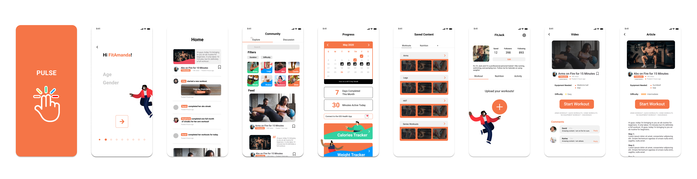

PULSE
Enhancing the Home Workout
Done as part of the final assigment for my DSGN 100 class at UCSD, PULSE is a home workout app created in response to the sudden transition to the stay-at-home orders. My team focued on the changes that have happened to people's physical fitness routines with the closure of public gyms and worked to create a prototype mobile application that smooths the transition.
🥅 Create a mobile application to support an active and connected life during the pandemic.
CONCEPTS INVOLVED:
UX Research, UI Design, Prototyping, Product Design
TOOLS
✔ Figma
DURATION:
⏰ 4 weeks (Feb-Mar 2020)
MY ROLE:
✌ Visual Designer
✌ Prototyper
IDENTIFYING THE COMPETITORS
We looked into competitor home-workout apps like 30-Day Fitness, Fitness Builders, Home Workout, Nike Training Club, KEEP, and 7(SEVEN). While most of these fitness apps do a great job at providing personalized home-workouts, they don't really foster a sense of community within the app.
DIFFERENTIATING
The main goal of Pulse is to provide a friendly community through a trade of knowledge between users. Pulse allows users to identify as content creators, who can upload their own workouts, or content viewers, who can choose workouts and engage with other users on the app. Our app aims to build a community that motivates each other to achieve a healthier, more active life-style.
USER PERSONAS
Two user personas were created to capture the target audience of our app.
USER FLOW
The content creator user flow is for users like Jack who have previous experience teaching fitness and wants to share their knowledge/tips on fitness and a healthier lifestyle.
The content viewer user flow is for users like Erica who want to achieve a healthier lifestyle and become fit but don't know how to start.
LO-FIDELITY PROTOTYPE
To conduct initial user testing, we created a lo-fi prototype with an idea of how our app would look and function.
Insights:
- Reconsider the layout of the "Community" Portion of the app as it is very similar to Youtube. The "Discussion" portion within the "Community" should steer away from long texts as it can appear as too much for the user.
- Refine onboarding questions - consider which questions should be required and which questions shouldn't be.
- Navigation within the app seems to be pretty straightforward. Just expanding the features on each of the pages would make the app complete.
MOODBOARD & STYLE GUIDE
Orange became the main color of Pulse because it symbolizes energy, strength, and enthusiasm, while also conveying a sense of sociability and balance, which is exactly what Pulse aims to be. Complementary colors were also incorporated throughout so that the interface wasn't too monochromatic. The sans-Serif font Roboto gave a simple and modern look to the design.
HI-FIDELITY PROTOTYPE
For the creation of the hi-fi prototype, I was in charge of creating the Progress page which functions to provide the user with tools to measure their progress. I first considered which progress the user might want to keep track of when pertaining to fitness. After discussion with teammates and some consultation from competitor apps, we decided that it was best to record progress through the number of days that users used the app to workout and whether the app was beneficial for them or not through data gathered in terms of calories or weight change.
Some feedback about the our finalized app include:
- The visual of the app is very simple and motivating which is nice.
- Think of implementing a light vs. dark mode for users that prefer/require a darker visual.
- In terms of the social media aspect of the app, this app provides fitness people on IG/Youtube with their own platform which really narrows down distractions that can divert the users attention away from pursuing their workout.
A QUOTE FROM OUR INTERVIEW!
"It’s like a social fitness application which is something that so many people try to be on Instagram, but they get so much flack for it because they’re fitness influencers. Really, from what I can see, this app is designed to be used by a health inclined audience and those who care for others rather than those who just pose for attention. This would be helpful because people can get help from other people who are obviously getting results and know what they’re doing which is great. "
FINAL REMARKS
Despite the sudden change to remote instruction, this project was really fun to do thanks to my awesome teammates and made me realize the power and importance of digital tools and the online community that we have. Creating a product in response to a current problem also gave me hands on experience into creating a human-centered product and allowed be to hone my visual design and prototyping skills. I'd say the biggest takeaway for me was how valuable feedback can be in creating a great user experience!
Going forward, I think it would be a really cool idea to look into implementing a virtual call feature so that creators can host home workout sessions or friends can casually have a workout session together :)